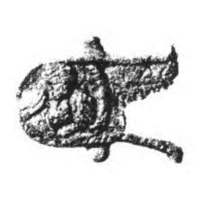

Catalog › CE-0805 · KOR2003-II.1.1.188
Valvă de revers de cruce-encolpion cu „lacrimi”, Odighitria și sfinți bust, turnare târzie
sec. turnare târzie într-o formă provenind dintr-o matriță de la începutul sec. XIII (1201–1300) · loc necunoscut · Muzeul-rezervație istorico-cultural de Stat „Kremlinul din Moscova” (Muzeul „Kremlinul din Moscova”), Moscova, inv. МР-8864
single valve of a reliquary cross, aramă; c. turnare târzie într-o formă provenind dintr-o matriță de la începutul sec. XIII (1201–1300); find spot unknown; kept at Muzeul-rezervație istorico-cultural de Stat „Kremlinul din Moscova” (Muzeul „Kremlinul din Moscova”), Moscova.


Identificare
- Categorie
- Valvă izolată
- Material
- Aramă
- Tehnică
- Turnare în relief; Gravare (incizie)
- Dimensiuni
- Î 82 × L 70 × Gr 4 mm
Iconografie
- Revers
- Maica Domnului cu Pruncul; Neidentificat
- Descriere revers
- Valva de revers a unei cruci-encolpion cu capete rotunjite și proeminențe semicirculare „lacrimi”; foarte tocită; balamalele de jos lipsesc, doar una păstrată pe capătul de jos; deasupra nimbului Maicii Domnului o mică gaură; pierdere de metal pe marginea capătului de sus. Chivot puțin adânc, cu mici adâncituri corespunzând imaginilor, forma repetă crucea cu „lacrimi”. Imagini în relief: în centru și pe capătul de jos Maica Domnului Odighitria; nimbul ei și nimbul lui Hristos sunt completate pe margine cu o bandă de hașuri rare trasate prin linii imprimate; aceleași hașuri sunt pe marginile turtite în relief care formează pe cele trei capete de sus medalioane cu imagini bust de sfinți necunoscuți.
- Inscripții
- IC XC/MP ΘY (adâncite, turnate odată cu crucea, de o parte și de alta a figurii Maicii Domnului pe capetele laterale)
- Limba
- Greacă
Datare și atribuire
- Datare
- sec. turnare târzie într-o formă provenind dintr-o matriță de la începutul sec. XIII (1201–1300)
- Centru
- Necunoscut
- Tipologie
- Korzukhina–Peskova 2003, tip II 1 1
Descoperire
- Context
- Colecție (fără context)
Păstrare și referințe
- Colecție
- Muzeul-rezervație istorico-cultural de Stat „Kremlinul din Moscova” (Muzeul „Kremlinul din Moscova”), Moscova
- Nr. inventar
- МР-8864
- Bibliografie
- G. F. Korzukhina, A. A. Peskova, Древнерусские энколпионы. Нагрудные кресты-реликварии XI–XIII вв., Sankt-Petersburg, 2003 [Korzukhina–Peskova 2003], p. 79, cat. nr. II 1 1/188, reprodusă la Табл. 21 (planșe, p. 263).
- Figura
- Табл. 21
- Planșe
- Korzukhina–Peskova 2003, Табл. 21 (planșă fără paginație proprie în PDF; p. 263 tipărită)
- Observații
- Datare după Peskova: sec. turnare târzie într-o formă provenind dintr-o matriță de la începutul sec. XIII. Dimensiuni: fără balamale. Coordonate: nu sunt date în sursă.
Citare: Corpus Encolpiorum, CE-0805, Valvă de revers de cruce-encolpion cu „lacrimi”, Odighitria și sfinți bust, turnare târzie, --root/piese/KOR2003-II.1.1.188/ (accesat 2026-10-17).